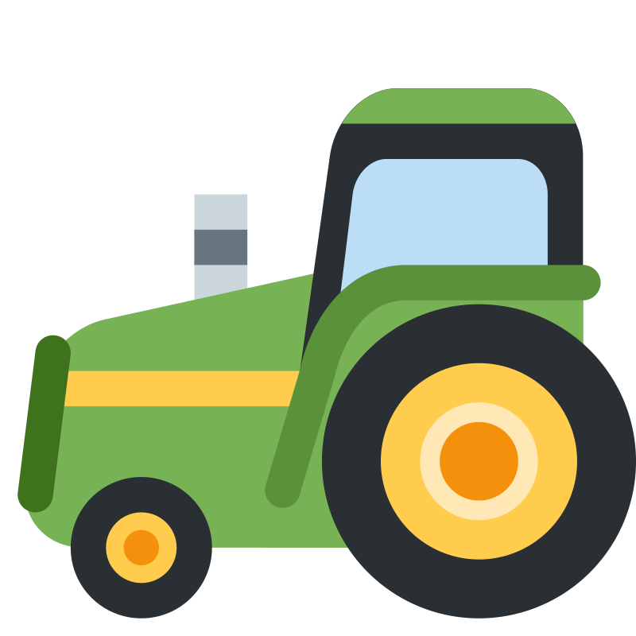
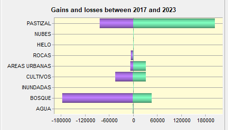
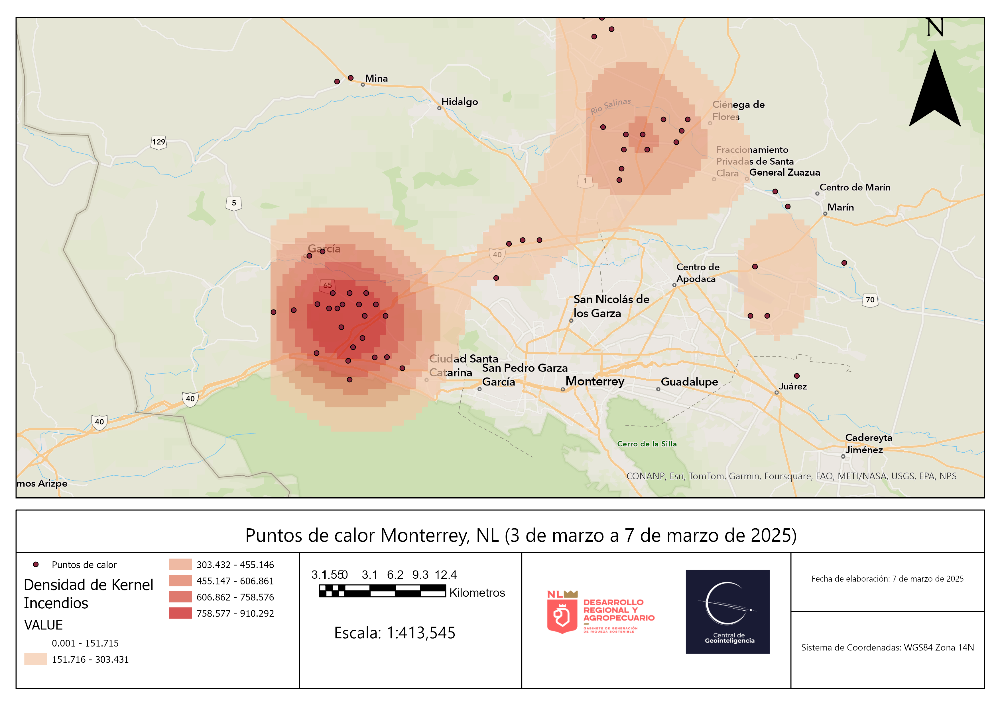
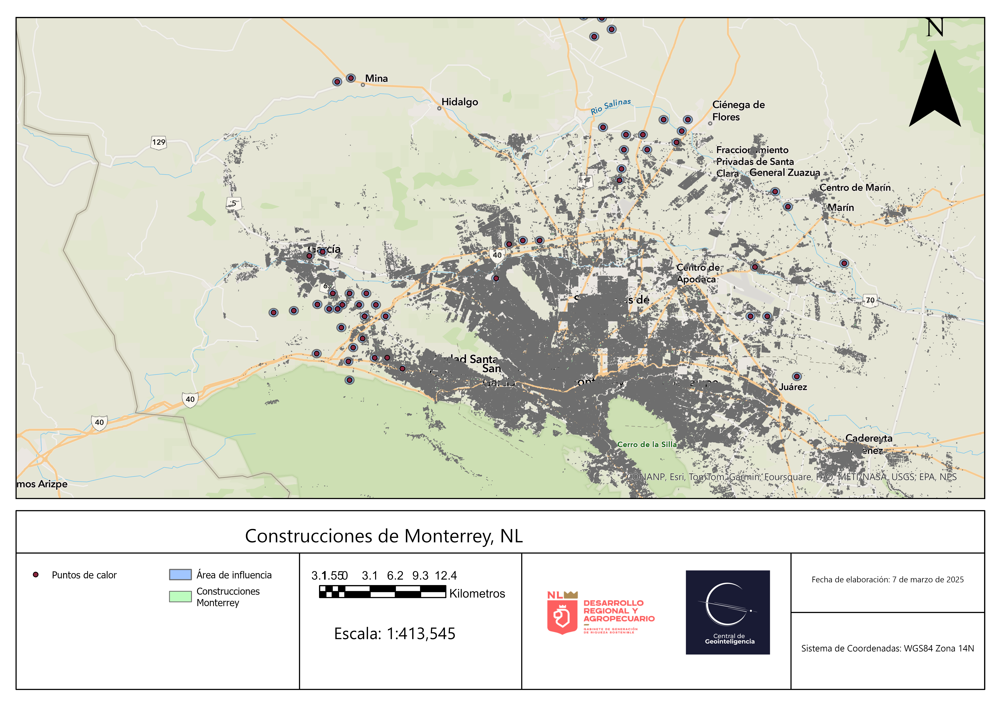

Análisis de los incendios en Monterrey desde la perspectiva de la ciencia geoespacial.
El siguiente articulo fue elaborado con la intención de buscar las causas de porque están ocurriendo tantos incendios en Monterrey. Esto analizado desde una perspectiva espacial.
¿Qué elementos tomamos en cuenta para hacer el análisis?
Se utilizó la teledetección la cual es la ciencia que se encarga de obtener, almacenar y procesar información satelital. Esto nos permite hacer análisis a pequeña y gran escala de manera extremadamente rápida. Además, se utilizaron redes neuronales para la detección y contabilización de construcciones en la zona urbana.
Es una plataforma que nos dice casi en tiempo real, donde se encuentran puntos de calor. Se utilizó para saber exactamente donde hay un incendio forestal y en base a esas coordenadas, obtener puntos de control.
ESRI® cuenta con usos del suelo desde el año 2017 hasta el 2023. Estos productos fueron utilizados para identificar el cambio en los usos del suelo en la región de Monterrey y sus alrededores.
Para la obtención de variables climáticas como la velocidad del viento o la temperatura, se utilizó El Sistema global de asimilación de datos de la Tierra de la NASA el cual es de libre acceso y mediante operaciones matemáticas se obtuvo toda la información de este sistema.
En un periodo de 6 años (2017-2023) hubo una dinámica bastante particular y alarmante. Los pastizales aumentaron considerablemente a costa de la perdida de bosques. Esto favorece la aparición y propagación de incendios forestales.
Aumentaron 204,165 ha y se redujeron 83,444 ha de pastizal.
Las áreas urbanas aumentaron 31,506 ha

La agricultura aumentó 32,757 ha y perdió 43,886 ha
El bosque aumentó 47,502 pero perdió 176,845 ha

Mapas de cambio en el uso del suelo
En el mapa se puede observar claramente como los pastizales (color crema) han ganado terreno en tan solo 6 años. Pero han ganado terreno principalmente a costa de los bosques (zona verde).
Densidad de los puntos de calor entre el 3 y 7 de marzo de 2025
En la imagen se muestra el comportamiento de los puntos de calor registrados entre el 3 y 7 de marzo de 2025. En la región Noroeste es donde hubo una mayor actividad de incendios. Y es precisamente donde hubo mayor temperatura, velocidades de aire altas y una baja humedad relativa.

Construcciones que estuvieron en peligro durante los incendios
Mediante Redes Neuronales e imágenes satelitales, se obtuvieron todas las construcciones que hay en Monterrey. De esta manera se contabilizaron 791,917 construcciones. Sin embargo, para saber cuántas construcciones estuvieron en peligro por los incendios, se realizó un área de influencia de 100 metros a partir de los puntos de calor detectados. Resultando así que 130 construcciones estuvieron en peligro durante los incendios.

¿Qué factores encontramos nosotros que pudieron influir en la propagación de incendios
Encontramos 4 factores que explican la propagación descontrolada de los incendios:
Junto con el aumento de los pastizales también lo hace el riesgo de incendio. Es bien sabido que, al ser un tipo de vegetación diferente, el fuego inicia y se propaga mucho mas fácil en pastizales que en otros usos del suelo.
Favorecen en el inicio de los incendios, principalmente si hay basura como vidrios por ejemplo, ya que actúan como una especie de lupa que inicia el fuego. Además, al tener temperaturas altas el fuego se propaga mucho mas fácil. Superior a 30 °C favorece a los incendios.
Una velocidad alta del viento favorece en la propagación de los incendios forestales. Además, este ayuda a acelerar el secado de los combustibles por lo que se expande mucho más rápido el fuego. Superior a 35 km/h ya es un factor que influye en el inicio y propagación de un incendio forestal.
Al haber baja humedad relativa (inferior al 30%) el ambiente es muy seco y propicia la aparición de incendios forestales. Además, ya que existe algún incendio, al no haber humedad este se propaga de mucho mejor manera.
Siguiendo estos 4 factores, se desarrolló una aplicación interactiva que predice las zonas de Nuevo León que tienen mayor riesgo de tener incendio forestal.
Acceder a la plataforma interactiva